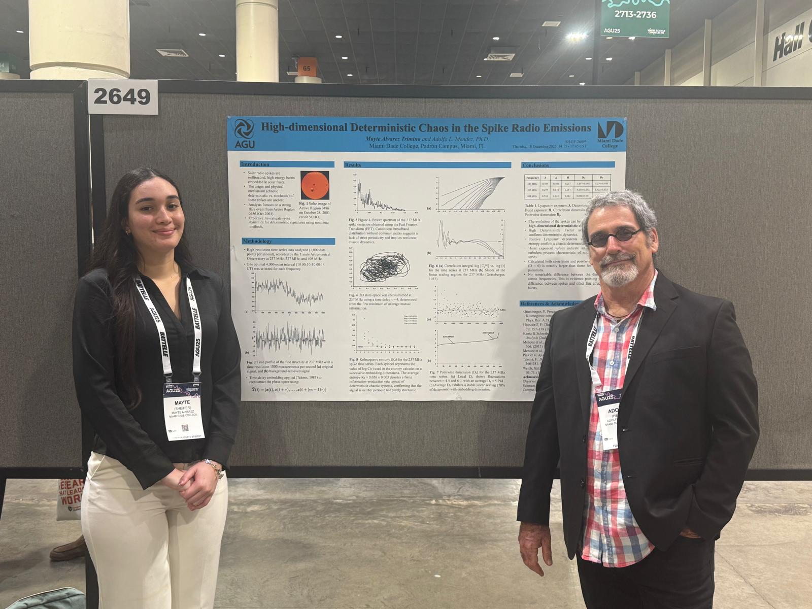
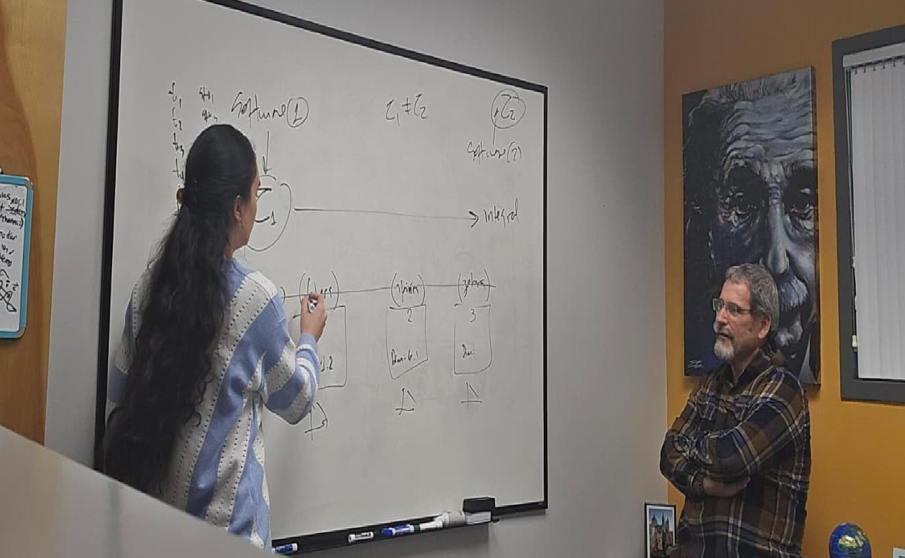

👥 Research Collaboration
Working together to advance our understanding of plasma physics
Professor Adolfo Mendez
Faculty Researcher, Miami Dade College
Professor Mendez specializes in solar physics and plasma dynamics, with extensive experience in radio astronomy and nonlinear systems analysis. His research focuses on understanding the complex behavior of solar emissions and their implications for space weather.
Our collaboration has been instrumental in developing innovative approaches to analyzing solar radio burst data and uncovering the deterministic chaos underlying these phenomena.

At the American Geophysical Union (AGU) Fall Meeting 2025
Collaborative Research Effort
This research represents a true collaboration between faculty expertise and undergraduate innovation. Professor Mendez provided the theoretical framework and domain knowledge in solar physics, while I contributed the computational implementation and analytical techniques for nonlinear time-series analysis.
Together, we developed a comprehensive methodology that combines astrophysical insights with advanced mathematical tools, resulting in novel findings about the chaotic nature of solar radio emissions.
My Contributions to the Research
Analytical Framework
Designed and implemented the phase-space reconstruction and correlation dimension analysis pipeline.
Computational Implementation
Developed efficient algorithms for processing large-scale time-series data and generating control datasets.
Interpretation & Validation
Conducted statistical validation and interpreted results in the context of plasma physics theory.
Impact of Collaboration
This collaborative research experience has been transformative in shaping my approach to scientific inquiry. Working alongside Professor Mendez has taught me the importance of interdisciplinary thinking, rigorous methodology, and clear scientific communication.
The partnership has resulted in multiple conference presentations, a manuscript submission, and most importantly, a deeper understanding of how theoretical physics and computational methods can work together to solve complex problems in astrophysics.
This experience has solidified my commitment to pursuing graduate studies in plasma physics and continuing to explore the fascinating intersection of nonlinear dynamics, computational science, and astrophysical phenomena.
